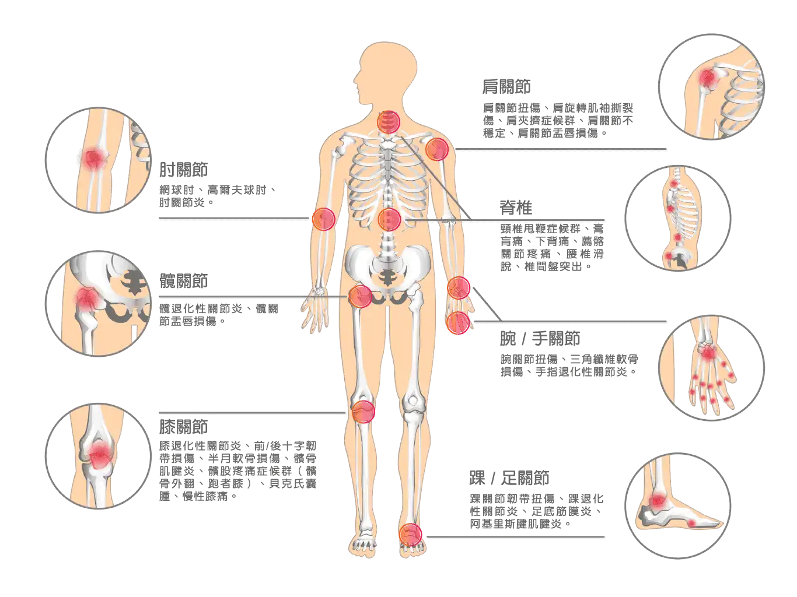
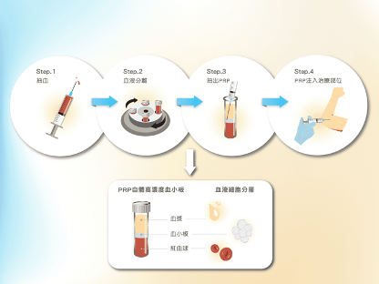

增生療法
 療程介紹
療程介紹
PRP增生療法是將增生劑注射至受損的軟組織如韌帶、肌腱、關節軟骨等，以刺激身體重新啟動修復反應。目前常用之增生劑為高度濃縮葡萄糖溶液、濃縮自體血小板生長因子等。增生療法之適應症狀包含肩膀旋轉肌腱病變、網球肘、退化性關節炎、韌帶受傷等運動傷害、肩頸腰部疼痛等等應用範圍相當廣泛。文獻統計治療效果為 82% 患者有明顯進步。

增生療法的治療種類
高濃度葡萄糖
適用於慢性組織受傷之症狀，主要診療以刺激身體發炎而修復為目的。
*療程時間每2-4週注射一次。依病況，約需3-8次，注射後可能會有痠脹之現象。
高濃度自體血小板血漿
適用於慢性肌腱炎、退化性關節炎等之症狀，主要診療以注射自體之生長因子為目的。
*療程時間約4周注射一次，依病況，約需3-5次。注射後兩周較為痠痛之現象。
羊膜
適用於退化性關節炎、慢性疼痛、運動傷害、術後疼痛之症狀，主要診療以注射豐富的細胞骨架與生長因子為目的。
*療程時間約4周注射一次，依病況，約需3-5次。注射後兩周較為痠痛之現象。
適合使用族群
亞健康族群

銀髮族
一般上班族
職業婦女
適用症狀

增生療法修復原理
身體組織受傷後，會經歷三個階段：發炎期 ➡ 增生期 ➡ 修復期，之後便會恢復健康的狀態。然而部分組織容易發生發炎期過長的現象，導致後續增生期與修復期的延遲。
重新啟動正常的發炎反應，以促進組織重新修復的注射治療。韌帶、肌腱、軟骨（如前十字韌帶、半月板軟骨）等部位由於血流量較少，修復能力較差，一旦受傷便不容易痊癒。透過增生療法能夠重啟人體本身的修復能力，讓受傷脆弱的組織重新恢復強壯，減緩疼痛。
增生療法流程

注意事項
- 注射部位若有紅、腫或輕微瘀血為正常現象，脹痛通常持續 1 週。
- 建議注射後 2 周內降低運動量與強度，不需停止運動，但勿進行激烈運動。
- 3 周內避免使用消炎藥物，以免降低療效。
- 可服用「普拿疼」止痛，不要服用「消炎止痛藥」！
- 請按醫師建議，於回診確認狀況。
- 配合物理治療師指導下進行適當運動復健，促進修補效率。
- 曾有血液或癌症病史者，不適合注射。若有疑問可詢問醫師。
- 注射前兩周需要避免使用止痛與消炎藥， 才可使療效更佳，也可增加血小板的活性。
- 2 週後可漸漸回復原來的運動習慣，如有不適必須立即停止運動。
- 注射後請攝取足夠的營養，如蛋白質、維他命、充足睡眠，宜持續搭配復健療程，姿勢矯正、拉筋伸展運動、肌力訓練等，促進修復效果更佳。